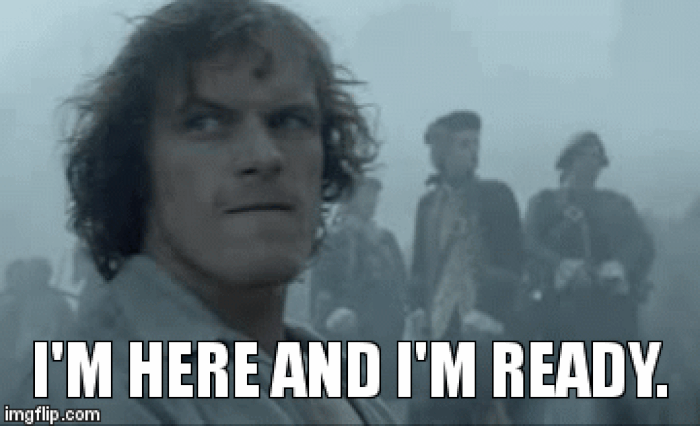
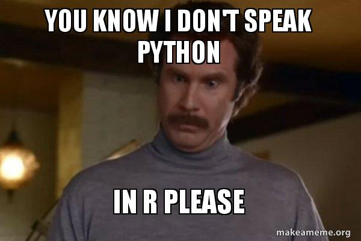

So you’re getting a Masters in Analytics

The new school year is right around the corner and I have gotten a few requests from new students entering a Data Science or Analytics program to talk about my experience in graduate school. I graduated with a Masters of Science in Analytics from the University of Chicago in June 2016. It was an amazing experience that helped propel me into a new career but there are definitely things I wish I had known or would have done differently.
I’ve tried to keep track of the different questions people ask and aggregate them into a list. A few caveats:
- My program, homework, and projects were primarily in R.
- This is assuming that you are entering the program to find a new job or career.
Here is my advice to aspiring data scientists/analysts entering these programs and how I would have made an already great experience even better.
1. Learn Git and put everything on GitHub (or equivalent)
Git and GitHub was not required for any classes (at least when I was in the program) and I really regret not using it with my classmates.
- GitHub is a great way to show off your skills to potential employers.
- It’s a much better collaboration tool than what we did (which was email each other with code changes).
- It’s also a good history so you remember things you’ve done (which I have forgotten already).
- It’s also way neater to have homework in projects in GitHub as opposed to a zillion folders on your Desktop (which is what I went with).
- Git[Hub] is also a great skill to have, as many data analysis/science teams use it regularly!
- There’s also nothing better than having a filled up contribution graph.

2. Leave each class with an example that you can show a potential employer
These programs go quickly. I was a part-time student and took my sweet time and even then I felt like I was racing towards the end. Due to competing priorities, it’s easy to rush through homework assignments and projects. Instead of focusing on completion, remember the goal of this is to enter a new career/role/path in life and that everything you do is an example of a new skill you can showcase. So: document your work. Be clear in the intention behind it and how you went through your thought process. Make it presentable. Related to the advice above, link potential employers to your GitHub.
Of course, I understand that not all homework applies to this — but a lot of it does, in particular your final projects. Are you going to put on your resume that you can produce dashboards with data visualizations? You must have an example to back that up — and be able to show how this project illustrates the value you can bring to your future company.

3. Diversify your programming languages
My classes were primarily in R, with only one course requiring Python. In a short amount of time, I picked up and could use Python — and I lost my skills in about the same amount of time once the course was over! Without the discipline of practicing and keeping up my programming skills in languages other than R, they quickly were put on the backburner and eventually forgotten.

Once I was finishing up school and applying for jobs, I had to admit to potential employers that my R skills were much stronger. This ultimately worked out but it did put me out of the running for any Python shops. To replicate the work I did in Python, I’d have to refresh myself on even the basics of the language — which is a shame considering how much effort I put in when I was in the class.
4. Choose your Capstone project and advisor carefully
When it was Capstone time, the options were listed on a website and we were told to form a group, choose a project, and pick out an advisor. It seemed like those were the only variables but in actuality there were many other considerations that impacted the difficulty and complexity of the project. They directly affected whether or not someone graduated when they wanted so this is a decision to take very seriously.
- Research Question: Is the research question defined (clearly) by the Capstone sponsor? If not, a lot of time will be dedicated to research question development, edits, rewrites, and eventual approval.
- Data: The addition of a project to the Capstone list does not mean that the data will be readily available to you when you want to begin your project. Several students chose a project under the assumption that the Capstone sponsor would immediately send over the data and instead had to wait a quarter (!) before they actually received anything and could begin analysis. Ask: Is the data available, and if not, how will it be collected? Will you need to sign a confidentiality agreement and who is in charge of that? How will the data be transferred to you and in what format? How long will it take to get the data? Will you need to update or refresh it throughout the course of your Capstone? Will you refine your research question(s) once you have the data?
- Sponsor Availability/Interaction: Some sponsors want to be involved in every step of the process. Some sponsors will see you once a quarter. There are pros and cons to each approach but generally speaking you want a sponsor that provides clear guidance and expectations without micromanaging. Try to find out the kind of sponsor you have so you know how to best work with them. You are in it together for the long haul!
- Advisor Availability/Interaction: Similar to the sponsor, the Capstone advisor will vary in their expectations of how they will collaborate. Be mindful that some advisors are handling a heavy load — another job, classes, and several Capstone projects at the same time — and therefore you have to account for how you will get their time and attention. This can be frustrating if you need help or are struggling to meet a deadline. Decide your expectations early — my group set up a standing weekly call and biweekly in-person meeting with our advisor.
- Advisor Specialty: Some advisors have more experience or insight in the particular analysis you are trying to do. My Capstone project dealt with survey respondents — and luckily my advisor was a marketing researcher! However, sometimes the advisor’s specialty differs from your analytic approach and your group will have to do more research on their own to fulfill the sponsor’s needs.
- Group Availability/Interaction: In a sudden turn of events, one of the members of a Capstone group quit to start a new job in another state. This left their group in disarray as they tried to figure out how to manage the rest of their project. While I am happy for the person who got a job (that is the point of it all, anyway), they could have helped out their team by being open and honest. Ask your potential teammates: What happens if you were offered a new job? Is your graduation timeline fixed or flexible? How many other courses are you taking and how much time can you dedicate to this project? Along with these questions, figure out how everybody intends to interact and set clear expectations from the beginning so that the group can work towards success together.
5. Keep track of and give recommendations on how the program can improve
I was in the second cohort of my Analytics program and even though it’s been a couple of years since then, most data science curriculum are relatively new. There are still kinks to work out in terms of what should be required, what should be optional, what order to take courses in, etc. For example, we were thrust into the world of R because our homework had to be done in R, even though many of us had never even installed a package before! We made the recommendation to administration that they should create a short course covering the basics and now it’s offered to any student who may benefit from it.

As you go through your program, everything will seem to go so quickly. The details will get lost in the blur unless you intentionally think about how to improve your experience and the experience of those who will come after you.
6. Learn what you love about the process
As you progress through your Analytics or Data Science program, you will learn the nuance and complexity of data work. It is a fascinating journey that requires project management, client interaction and understanding, technical expertise, feedback loops, and trial and error. It’s all amazing and necessary but there will be parts that you enjoy more. I have always been into creating aesthetically pleasing work and knew I would love developing data visualizations. I didn’t know that I love the creativity and mind puzzles that come with data wrangling. Some people feel the opposite — that is their least favorite part of the data science routine. But they may enjoy business requirements gathering a lot more than I do.
You should know how to successfully accomplish the data science methodology but graduate school is also an opportunity to learn which part excites you. Because of the enormous world of data analytics out there, this will help hone in on the role that can bring joy to your work as much as possible.

Conclusion
The purpose of these data science/analytics degrees is to serve as a means to an end but it’s been two years since I finished my Masters and I still reflect on the experience. Along the journey, there was a lot of change and improvement. My Analytics program impacted how I think, my career trajectory, and what I do outside of work. For that I am thankful, as I also realize that there is no definite end to learning.
Liked this article? I’d love for you to retweet!
First blog post on my new #blogdown 🎉: So You’re Getting a Masters in Analytics 👩🏽🎓👨🏽🎓‼️ Reflections from an R-Centric Program https://t.co/mvOPKbcSeG #datascience pic.twitter.com/uaq721m2ZL
— Isabella Velásquez (@ivelasq3) August 8, 2018